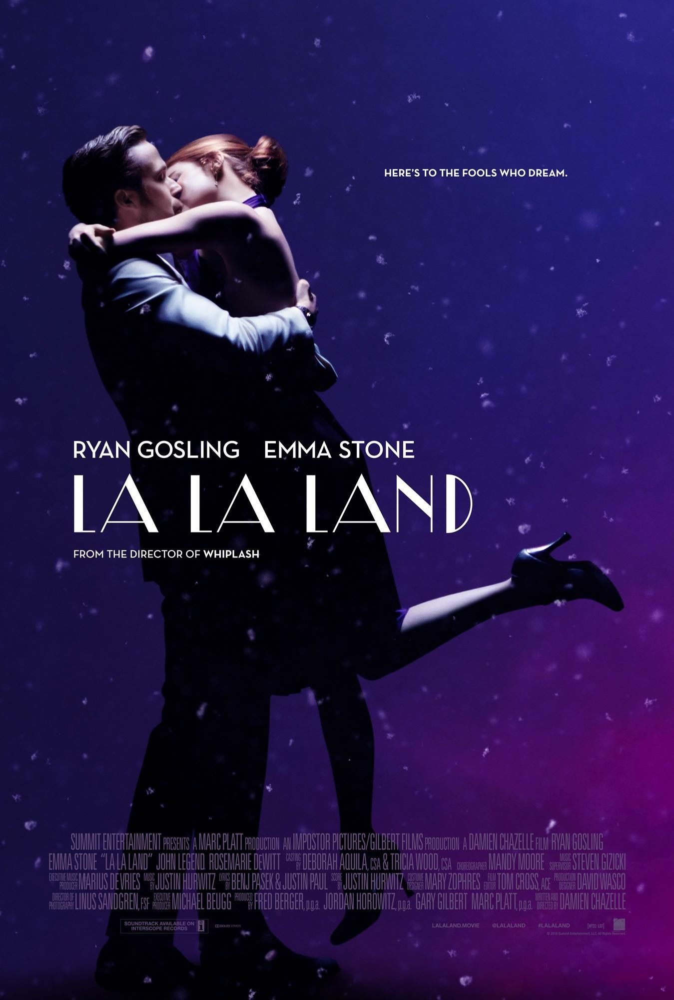

La La Land is a 2016 American romantic comedy musical film written and directed by Damien Chazelle. It stars Ryan Gosling as a jazz pianist and Emma Stone as an aspiring actress, who meet and fall in love while pursuing their dreams in Los Angeles. John Legend, Rosemarie DeWitt, Finn Wittrock, and J. K. Simmons also star. 
Having been fond of musicals during his time as a drummer, Chazelle first conceptualized the film alongside Justin Hurwitz while attending Harvard University together. After moving to Los Angeles in 2010, Chazelle wrote the screenplay but did not find a studio willing to finance the production without changes to his design.